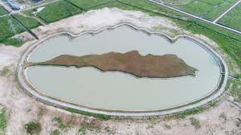

1. Gedung Kuliah Umum (GKU)
Gedung Kuliah Umum (GKU) adalah fasilitas utama di ITERA yang digunakan untuk perkuliahan dan kegiatan akademik lainnya. GKU dilengkapi dengan ruang kelas, dan fasilitas pendukung lainnya untuk mendukung proses belajar mengajar. Di ITERA memiliki dua gedung yaitu GKU 1 dan GKU 2.
2. Laboratorium Terpadu
Laboratorium Terpadu di ITERA menyediakan fasilitas penelitian dan praktikum bagi mahasiswa dan dosen. Laboratorium ini dilengkapi dengan peralatan modern untuk mendukung berbagai bidang program studi yang berisi peralatan penunjang penelitian mahasiswa.
3. Perpustakaan
Layanan Perpustakaan ITERA mencakup layanan peminjaman buku, jurnal, novel, majalah, dan bahkan menyediakan e-book. Ada juga layanan peminjaman tugas akhir dan bimbingan informasi ilmiah. Pihak perpustakaan menyiapkan buku yang diperlukan dari prodi masing-masing.
Jam Layanan Perpustakaan GKU:
- Senin - Kamis: 08.00 - 16.30
- Jumat: 08.00 - 17.00
Tata Tertib yang ada di Perpustakaan ITERA:
- Pengunjung wajib menyimpan tas dan barang bawaan lainnya dalam loker yang sudah disediakan.
- Pengunjung wajib meninggalkan kartu identitas (KTM, KTP, SIM, dll) untuk ditukarkan dengan kunci loker.
- Pengunjung wajib menjaga suara tetap kecil agar tidak mengganggu pengunjung lainnya.
- Pengunjung tidak diperkenankan membawa makanan dan minuman ke dalam perpustakaan.
- Pengunjung tidak diperkenankan merokok di dalam are perpustakaan.
- Pengunjung tidak diperkenankan membuang sampah sembarangan.
- Pengunjung tidak diperkenankan merusak, mencoret, menyobek, melipat, ataupun membasahi buku dan bahan pustaka lainnya.
4. Embung ITERA
Institut Teknologi Sumatera memiliki 7 Embung yang di namakan sesuai abjad A-B-C-D-E-F dan 1 Embung Kebun Raya yang di tengahnya terdapat monumen pulau berbentuk Sumatera.
Embung A sering dikunjungi karena dimanfaatkan sebagai tempat jogging bahkan bermain setiap sore. Embung E yang merupakan embung terbesar di ITERA kare diusukan menjadi pusat olahraga air terutama di cabang olahraga Dayung di Provinsi Lampung
5. Asrama Mahasiswa
ITERA telah melaksanakan program pembinaan untuk mahasiswa baru di asrama mulai dari Angkatan 2017. Lalu, setiap mahasiswa baru ITERA nantinya akan diwajinkan mengikuti Program Pembinaan Asrama TPB ITERA.
Kriteria seleksi kepada para calon penghuni asrama adalah sebagai berikut:
- Mahasiswa baru ITERA penerima Kartu Indonesia Pintar yang telah mendaftar melalui akun Data Induk Mahasiswa (DIM).
- Mahasiswa baru ITERA yang berasal dari luar Provinsi Lampung dan masuk ke dalam UKT Gol I, II, & III yang ditunjukkan dengan surat keterangan bukti UKT.
- Mahasiswa baru ITERA yang berasal dari seluruh Kabupaten/Kota Provinsi Lampung, dan masuk ke dalam UKT Gol. I, II, & III yang ditunjukkan dengan surat keterangan bukti UKT. Kriteria ini tidak berlaku bagi Mahasiswa Baru ITERA yang berasal dari Kota Bandar Lampung.
- Apabila kuota penghuni asrama yang dimaksud dalam poin 1 dan 2 belum terpenuhi, maka terbuka peluang bagi Mahasiswa baru dengan UKT di atas Gol. III yang ditunjukkan dengan surat keterangan bukti UKT.
Informasi Biaya dan Fasilitas Asrama:
| Biaya: | Rp. 200.000,- / bulan (dibayarkan total 10 bulan di awal pendaftaran) |
| Fasilitas: |
|
6. Kebun Raya ITERA

Kebun Raya ITERA didirikan pada tahun 2017 dengan tema "Konservasi Tumbuhan Pamah Sumatera", yang merujuk pada konservasi tumbuhan dataran rendah Sumatera yang unik. Ada 300 spesies tanaman yang sudah dikonservasi, termasuk 34 spesies anggrek dari Lampung, Indonesia, dan di luar negeri. Kebun Raya ITERA terletak di lahan seluas 75,52 hektare dan memiliki beberapa fasilitas yang mendukung konservasi tumbuhan, seperti rumah kaca pembibitan, paranet pembibitan, kantor, dan gudang pembibitan, selain fasilitas pendukung seperti gerbang dan akses jalan.
Sistem "Smart Botanical Garden" UPT Konservasi Flora Sumatera terdiri dari Smart Farming System, sistem informasi QR Code, Camera Surveillance, dan E-Ticketing. Smart Farming System telah diterapkan di rumah kaca dengan penggunaan sensor otomatis untuk menanam buah. Selain itu, mereka bekerja sama dengan mahasiswa untuk membuat panel surya yang menghasilkan listrik yang ramah lingkungan untuk mendukung digitalisasi dan otomatisasi kegiatan pertanian. Selain itu, teknik hidroponik sedang dikembangkan untuk menanam sayur dan buah. Kebun Raya ITERA memiliki banyak Rumah Kaca atau Paranet, masing-masing dengan tujuan tertentu. Misalnya, mereka digunakan untuk hidroponik, penelitian, Smart Farming System (budidaya melon), koleksi tanaman, kayu, aklimatisasi, pohon buah, anggrek, dan tanaman hias daun dan bunga.
7. GYM ITERA
Fasilitas ini dapat dimanfaatkan oleh seluruh sivitas akademika ITERA mulai dari dosen, tenaga kependidikan, hingga mahasiswa, secara gratis.
Sebanyak delapan alat gym, saat ini telah tersedia di pusat kebugaran ITERA di basment Gedung E ITERA. Delapan alat gym yang dapat dimanfaatkan yaitu leg press, cable crossover, statis bike, chest press, pull down and rowing machine, sit up, leg curl and extension, dan dumbell set.
8. Area Akses WiFi
Di setiap sudut gedung ITERA memiliki area akses wifi yang di fasilitasi kursi dan meja bagi seluruh civitas akademika yang ingin memakai koneksi internet dalam keperluannya..